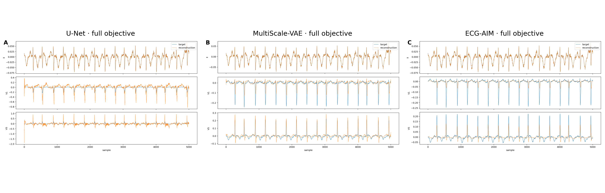

EchoNext tests whether reconstruction preserves the behavior of a frozen structural-heart-disease classifier on an external waveform cohort. It is not a reconstruction training cohort. Labels are echocardiography-derived, and the classifier consumes reconstructed waveforms together with unchanged original tabular metadata; retained discrimination cannot therefore be attributed to waveform fidelity alone.
ImportantCurrent artifact boundary
The current disk retains the label-identity audit, reviewed figures, and per-figure provenance. The record-level probability tables named by those provenance files were intentionally not retained in the compact working tree. This chapter verifies and displays the retained evidence but does not recompute AUROC, calibration, or stress summaries. Any numerical claim absent from a retained table or figure is suppressed.
21.1 Retained-evidence gate
Code
from pathlib import Pathimport hashlib, jsonimport pandas as pdfrom IPython.display import display, Image, MarkdownROOT = Path("..").resolve()CORE = ROOT /"results/factorial_v4"CLIN = ROOT /"results/factorial_v4_clinical"LABEL_AUDIT = CORE /"echonext_shd_label_audit.json"PREFLIGHT = CORE /"echonext_preflight.json"FINAL = CLIN /"FINAL_COMPLETION.json"FIGURES = ["echonext_shd_tasks", "echonext_shd_calibration", "echonext_shd_stress"]def sha256_file(path): h = hashlib.sha256()with path.open("rb") as f:for chunk initer(lambda: f.read(1024*1024), b""): h.update(chunk)return h.hexdigest()required = [LABEL_AUDIT, PREFLIGHT, FINAL]for stem in FIGURES: required += [CLIN /"figures"/f"{stem}.png", CLIN /"figures"/f"{stem}.provenance.json"]missing_required = [str(p) for p in required ifnot p.is_file()]if missing_required:raiseFileNotFoundError(f"Required retained EchoNext evidence missing: {missing_required}")label_audit = json.loads(LABEL_AUDIT.read_text())preflight = json.loads(PREFLIGHT.read_text())final = json.loads(FINAL.read_text())assert label_audit["status"] =="pass"and preflight["status"] =="pass"assertlen(label_audit["labels"]) ==12and label_audit["records_per_model"] ==5442assertlen(label_audit["model_checks"]) ==48assertall(v["status"] =="pass"for v in label_audit["model_checks"].values())assert {v["label_hash"] for v in label_audit["model_checks"].values()} == {label_audit["label_hash"]}rows = []missing_inputs =set()for stem in FIGURES: prov_path = CLIN /"figures"/f"{stem}.provenance.json" prov = json.loads(prov_path.read_text()) png = ROOT / prov["outputs"]["png"]["path"]assert sha256_file(png) == prov["outputs"]["png"]["sha256"] script = Path(prov["script"]) script_verified = script.is_file() and sha256_file(script) == prov["script_sha256"] retained_input_checks = []for declared in prov["inputs"]: p = Path(declared)ifnot p.is_absolute(): p = ROOT / pifnot p.exists(): missing_inputs.add(str(p.relative_to(ROOT))); retained_input_checks.append(False)else: retained_input_checks.append(sha256_file(p) == prov["inputs"][declared]) provenance_status ="output+generator verified; inputs incomplete"if script_verified andnotall(retained_input_checks) else ("output+generator+inputs verified"if script_verified andall(retained_input_checks) else"generator verification failed") rows.append((stem, sha256_file(png), prov["script_sha256"], provenance_status))display(pd.DataFrame([ ("Cohort records per model", label_audit["records_per_model"]), ("Registered model checks", len(label_audit["model_checks"])), ("SHD endpoints", len(label_audit["labels"])), ("Shared label hash", label_audit["label_hash"]), ("Preflight", preflight["status"]), ("Final package", f"{final['status']} ({final['checks_passed']}/{final['checks_total']})"), ("Missing recomputation inputs", "; ".join(sorted(missing_inputs))),], columns=["Gate", "Observed value"]))display(pd.DataFrame(rows, columns=["Figure", "Verified PNG SHA-256", "Generator SHA-256", "Verification scope"]))
Gate
Observed value
0
Cohort records per model
5442
1
Registered model checks
48
2
SHD endpoints
12
3
Shared label hash
a3030dbeedf75683cda617b15b0e061a80b67ec16ecc3a...
4
Preflight
pass
5
Final package
FAIL (9/10)
6
Missing recomputation inputs
results/factorial_v4/echonext_per_record/ecgai...
Figure
Verified PNG SHA-256
Generator SHA-256
Verification scope
0
echonext_shd_tasks
62c51a84687173325ecc6cd27e08b154f65c3138101aa8...
0e4f26ac3973b247b18fcca2ee776f7593740f0d7e5d2b...
output+generator verified; inputs incomplete
1
echonext_shd_calibration
57349517dd2004946372fe7ce29d9a1c3555105b4efea4...
dd6141385bf0d75bde7e766462e30094bd0efc666f16a0...
output+generator verified; inputs incomplete
2
echonext_shd_stress
ab54752840700c8cf4e3c99c999d7be28cc65c5dc3ddea...
6840d40c5f5f30d68b0f672540f898e6f56f6841b608fd...
output+generator verified; inputs incomplete
Retained EchoNext evidence, output hashes, and missing recomputation inputs.
Output integrity is not the same as end-to-end reproducibility: the retained PNGs match their provenance, but absent record-level inputs prevent independent recomputation on this disk.
21.2 Endpoint support and label identity
Code
support = pd.DataFrame([ {"endpoint": name.removesuffix("_flag"), **counts}for name, counts in label_audit["label_summary"].items()])support["prevalence"] = support.positive / support.nonmissingdisplay(support.sort_values("prevalence"))
EchoNext echocardiography-derived endpoint support shared identically across all 48 reconstruction cells.
endpoint
nonmissing
positive
negative
prevalence
6
pulmonary_regurgitation_moderate_or_greater
5442
20
5422
0.003675
3
aortic_regurgitation_moderate_or_greater
5442
66
5376
0.012128
8
pericardial_effusion_moderate_large
5442
69
5373
0.012679
2
aortic_stenosis_moderate_or_greater
5442
286
5156
0.052554
4
mitral_regurgitation_moderate_or_greater
5442
337
5105
0.061926
5
tricuspid_regurgitation_moderate_or_greater
5442
353
5089
0.064866
10
tr_max_gte_32
5442
375
5067
0.068908
7
rv_systolic_dysfunction_moderate_or_greater
5442
419
5023
0.076994
9
pasp_gte_45
5442
699
4743
0.128445
0
lvef_lte_45
5442
962
4480
0.176773
1
lvwt_gte_13
5442
1061
4381
0.194965
11
shd_moderate_or_greater
5442
2318
3124
0.425946
Rare endpoints—notably pulmonary regurgitation in this test set—have insufficient support for precise unqualified comparisons. Per-task confidence intervals and multiplicity-aware inference are required; macro averages must not conceal endpoint support.
Retained reviewed EchoNext SHD task figure. Source-table recomputation is unavailable on the compact disk; output and generator hashes are verified above.
The figure compares validation-selected reconstruction masks across twelve SHD tasks. Selection is not a 48-cell confirmatory comparison, and the unchanged tabular inputs remain part of every classifier prediction.
Retained calibration analysis for the prespecified composite SHD endpoint.
Calibration curves are descriptive unless accompanied by paired uncertainty and a prespecified calibration estimand. Apparent visual proximity to the diagonal does not establish calibration equivalence.
Simulation-only perturbation stress analysis with fixed EchoNext labels.
The provenance defines Gaussian and NSTDB noise plus synthetic baseline drift on a deterministic 2,198-record subset. This is robustness under controlled perturbation, not natural clinical deployment shift.
21.6 Representative reconstructed waveforms
Code
waveform_figure = CORE /"plots/echonext_representative_reconstructions.png"if waveform_figure.is_file(): display(Image(filename=str(waveform_figure)))else: display(Markdown("> Representative waveform figure unavailable in the retained package."))

Generation-bound representative external reconstructions retained by the core factorial package.
Representative examples are explanatory, not an error distribution. A publishable failure analysis additionally requires a prespecified tail-selection rule, waveform overlays for the worst paired records, fiducial markers, and detector-failure denominators.
21.7 What remains unverified
The retained evidence does not permit this chapter to recompute:
per-model and per-task AUROC/AP/Brier/ECE from record-level probabilities;
paired patient-cluster confidence intervals for reconstruction-versus-reference deltas;
label and probability identity across every archived model file;
subgroup, calibration-tail, or worst-record analyses;
the effect of waveform reconstruction separately from unchanged metadata.
Restoring a compact, deidentified record-level release database would enable those analyses without restoring bulky checkpoints. Until then, this page is an integrity-checked evidence atlas, not an independently executable classifier-validation analysis.
Source Code
# EchoNext External Validation: Available Evidence and Reproduction Boundary {#sec-echonext}EchoNext tests whether reconstruction preserves the behavior of a frozen structural-heart-disease classifier on an external waveform cohort. It is not a reconstruction training cohort. Labels are echocardiography-derived, and the classifier consumes reconstructed waveforms together with unchanged original tabular metadata; retained discrimination cannot therefore be attributed to waveform fidelity alone.::: {.callout-important}## Current artifact boundaryThe current disk retains the label-identity audit, reviewed figures, and per-figure provenance. The record-level probability tables named by those provenance files were intentionally not retained in the compact working tree. This chapter verifies and displays the retained evidence but does not recompute AUROC, calibration, or stress summaries. Any numerical claim absent from a retained table or figure is suppressed.:::## Retained-evidence gate```{python}#| label: echonext-retained-gate#| tbl-cap: "Retained EchoNext evidence, output hashes, and missing recomputation inputs."from pathlib import Pathimport hashlib, jsonimport pandas as pdfrom IPython.display import display, Image, MarkdownROOT = Path("..").resolve()CORE = ROOT /"results/factorial_v4"CLIN = ROOT /"results/factorial_v4_clinical"LABEL_AUDIT = CORE /"echonext_shd_label_audit.json"PREFLIGHT = CORE /"echonext_preflight.json"FINAL = CLIN /"FINAL_COMPLETION.json"FIGURES = ["echonext_shd_tasks", "echonext_shd_calibration", "echonext_shd_stress"]def sha256_file(path): h = hashlib.sha256()with path.open("rb") as f:for chunk initer(lambda: f.read(1024*1024), b""): h.update(chunk)return h.hexdigest()required = [LABEL_AUDIT, PREFLIGHT, FINAL]for stem in FIGURES: required += [CLIN /"figures"/f"{stem}.png", CLIN /"figures"/f"{stem}.provenance.json"]missing_required = [str(p) for p in required ifnot p.is_file()]if missing_required:raiseFileNotFoundError(f"Required retained EchoNext evidence missing: {missing_required}")label_audit = json.loads(LABEL_AUDIT.read_text())preflight = json.loads(PREFLIGHT.read_text())final = json.loads(FINAL.read_text())assert label_audit["status"] =="pass"and preflight["status"] =="pass"assertlen(label_audit["labels"]) ==12and label_audit["records_per_model"] ==5442assertlen(label_audit["model_checks"]) ==48assertall(v["status"] =="pass"for v in label_audit["model_checks"].values())assert {v["label_hash"] for v in label_audit["model_checks"].values()} == {label_audit["label_hash"]}rows = []missing_inputs =set()for stem in FIGURES: prov_path = CLIN /"figures"/f"{stem}.provenance.json" prov = json.loads(prov_path.read_text()) png = ROOT / prov["outputs"]["png"]["path"]assert sha256_file(png) == prov["outputs"]["png"]["sha256"] script = Path(prov["script"]) script_verified = script.is_file() and sha256_file(script) == prov["script_sha256"] retained_input_checks = []for declared in prov["inputs"]: p = Path(declared)ifnot p.is_absolute(): p = ROOT / pifnot p.exists(): missing_inputs.add(str(p.relative_to(ROOT))); retained_input_checks.append(False)else: retained_input_checks.append(sha256_file(p) == prov["inputs"][declared]) provenance_status ="output+generator verified; inputs incomplete"if script_verified andnotall(retained_input_checks) else ("output+generator+inputs verified"if script_verified andall(retained_input_checks) else"generator verification failed") rows.append((stem, sha256_file(png), prov["script_sha256"], provenance_status))display(pd.DataFrame([ ("Cohort records per model", label_audit["records_per_model"]), ("Registered model checks", len(label_audit["model_checks"])), ("SHD endpoints", len(label_audit["labels"])), ("Shared label hash", label_audit["label_hash"]), ("Preflight", preflight["status"]), ("Final package", f"{final['status']} ({final['checks_passed']}/{final['checks_total']})"), ("Missing recomputation inputs", "; ".join(sorted(missing_inputs))),], columns=["Gate", "Observed value"]))display(pd.DataFrame(rows, columns=["Figure", "Verified PNG SHA-256", "Generator SHA-256", "Verification scope"]))```Output integrity is not the same as end-to-end reproducibility: the retained PNGs match their provenance, but absent record-level inputs prevent independent recomputation on this disk.## Endpoint support and label identity```{python}#| label: echonext-retained-label-support#| tbl-cap: "EchoNext echocardiography-derived endpoint support shared identically across all 48 reconstruction cells."support = pd.DataFrame([ {"endpoint": name.removesuffix("_flag"), **counts}for name, counts in label_audit["label_summary"].items()])support["prevalence"] = support.positive / support.nonmissingdisplay(support.sort_values("prevalence"))```Rare endpoints—notably pulmonary regurgitation in this test set—have insufficient support for precise unqualified comparisons. Per-task confidence intervals and multiplicity-aware inference are required; macro averages must not conceal endpoint support.## Reviewed task-level figure```{python}#| label: echonext-task-figure#| fig-cap: "Retained reviewed EchoNext SHD task figure. Source-table recomputation is unavailable on the compact disk; output and generator hashes are verified above."display(Image(filename=str(CLIN /"figures/echonext_shd_tasks.png")))```The figure compares validation-selected reconstruction masks across twelve SHD tasks. Selection is not a 48-cell confirmatory comparison, and the unchanged tabular inputs remain part of every classifier prediction.## Calibration figure```{python}#| label: echonext-calibration-figure#| fig-cap: "Retained calibration analysis for the prespecified composite SHD endpoint."display(Image(filename=str(CLIN /"figures/echonext_shd_calibration.png")))```Calibration curves are descriptive unless accompanied by paired uncertainty and a prespecified calibration estimand. Apparent visual proximity to the diagonal does not establish calibration equivalence.## Stress figure```{python}#| label: echonext-stress-figure#| fig-cap: "Simulation-only perturbation stress analysis with fixed EchoNext labels."display(Image(filename=str(CLIN /"figures/echonext_shd_stress.png")))```The provenance defines Gaussian and NSTDB noise plus synthetic baseline drift on a deterministic 2,198-record subset. This is robustness under controlled perturbation, not natural clinical deployment shift.## Representative reconstructed waveforms```{python}#| label: echonext-waveform-figure#| fig-cap: "Generation-bound representative external reconstructions retained by the core factorial package."waveform_figure = CORE /"plots/echonext_representative_reconstructions.png"if waveform_figure.is_file(): display(Image(filename=str(waveform_figure)))else: display(Markdown("> Representative waveform figure unavailable in the retained package."))```Representative examples are explanatory, not an error distribution. A publishable failure analysis additionally requires a prespecified tail-selection rule, waveform overlays for the worst paired records, fiducial markers, and detector-failure denominators.## What remains unverifiedThe retained evidence does not permit this chapter to recompute:1. per-model and per-task AUROC/AP/Brier/ECE from record-level probabilities;2. paired patient-cluster confidence intervals for reconstruction-versus-reference deltas;3. label and probability identity across every archived model file;4. subgroup, calibration-tail, or worst-record analyses;5. the effect of waveform reconstruction separately from unchanged metadata.Restoring a compact, deidentified record-level release database would enable those analyses without restoring bulky checkpoints. Until then, this page is an integrity-checked evidence atlas, not an independently executable classifier-validation analysis.